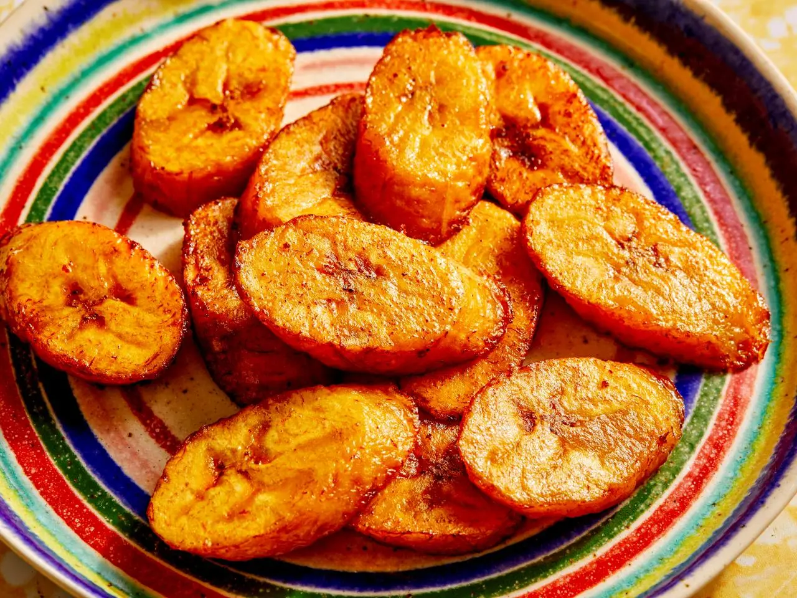

Home
Fried-plantain

Delicious Fried Plantains
Fried plantains are a classic West African comfort food—crispy on the outside, soft and sweet on the inside. They’re made by slicing ripe plantains diagonally and frying them until golden brown. Perfect as a snack or side dish, they pair wonderfully with rice, beans, or spicy stews.
To prepare this dish, start by choosing ripe plantains with black or dark yellow skins for extra sweetness. Peel and slice them, then fry in vegetable oil over medium heat until each piece is beautifully caramelized. Sprinkle with a pinch of salt or cinnamon, and serve hot for the ultimate taste experience.
Ingredients
- 2 ripe plantains
- Vegetable oil for frying
- Pinch of salt (optional)
- Ground cinnamon (optional)
Steps
- Choose ripe plantains with mostly black or dark yellow skins for a sweeter taste.
- Peel the plantains and slice them diagonally into thin rounds.
- Heat vegetable oil in a frying pan over medium heat.
- Carefully place the plantain slices into the hot oil without overcrowding the pan.
- Fry each side for about 2–3 minutes until golden brown and caramelized.
- Remove the fried plantains with a slotted spoon and place them on paper towels to drain excess oil.
- Sprinkle with a pinch of salt or ground cinnamon if desired.
- Serve hot as a snack or side dish—enjoy!